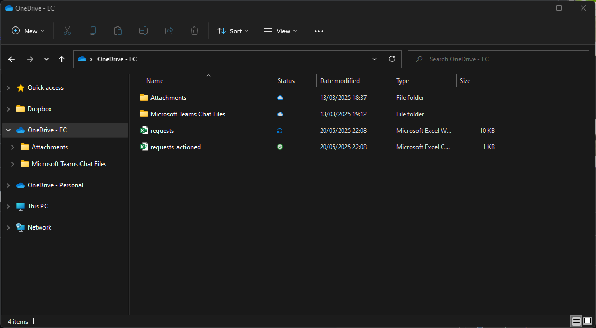

WRITE-UP INCOMPLETE - Proof of concept to be added. It does work pretty well though, trust me bro.
Pseudo API
Disclaimer
This project was developed for the contact centre I work at, in my role as a data engineer, within a constrained corporate IT environment, where access to Microsoft APIs is heavily restricted and Power Platform licensing is basic. After some tinkering, this seems to be the most reliable/seamless method I've found given the constraints.
Overview
The initial purpose of this project was to allow the transfer of data from the Microsoft ecosystem to my local DB, so it could be merged with another dataset (call logs) before being sent back to the Microsoft ecosystem. However, since then I've realised that this idea has scope to scale.
The problem this solves could essentially be what you want it to be. It's the reason I haven't scaled this idea yet — I'm waiting for a concrete use case, beyond what I'm already using it for.
Tools & Workarounds
Due to the limitations of the environment, I had to employ some unconventional but effective solutions to get this project operational:
- SharePoint – Used for storing function names, parameters, and logging requests.
- Power Apps (Free License) – Hosts a form tied to the SharePoint list and Excel workbook.
- Excel – Stored locally but synced with OneDrive for external access.
- OneDrive – Hosts the Excel workbook and keeps it synced.
- Python – Monitors the Excel sheet locally and executes functions asynchronously.
- Power Automate (Free License) – Receives responses via HTTP and updates SharePoint accordingly.
- Always-on PC – Required to run the local Python listener.
Workflow
Here’s how it operates at a high level:
- User submits a form via Power Apps with function and parameters.
- On submit, Power Apps writes to SharePoint and the synced Excel workbook.
- Python detects new spreadsheet entries, and runs the function described.
- Python makes a HTTP request to a Power Automate HTTP trigger.
- Power Automate updates SharePoint, logging the outcome and handles any follow-up actions.
Technical Breakdown
First, we’ll start by creating the spreadsheet to receive requests from Power Apps. We’ll create a table with the headers: ‘sharepoint_item_id, ‘function’, and ‘parameters’ (Figure 1). I’ve named this table ‘request_log’ so it’s recognisable in the Power App’s list of data sources if we ever want to add more excel sources down the line.

Then we’ll save that to a folder that syncs with OneDrive with the name ‘requests’ (Figure 2), ensuring that the OneDrive folder is part of the same environment where we’ll create the Power App, SharePoint list, and the Power Automate flow. In my case, my environment is ‘EC’.
We’ll also create a CSV called ‘requests_actioned’ (Figure 2), containing the same headers as OneDrive spreadsheet as well as some additional headers: ‘created, ‘completed’, ‘status’, and ‘failure_reason’. I’ve saved this to the same folder for this example but it’s better to keep this file in an offline folder to avoid needless disk usage from OneDrive syncs. It would be wise to create a backup file in OneDrive though, which could be overwritten daily during downtime.

Secondly, we’ll need a Python script to monitor the spreadsheet we’ve just created. To be able to catch new data as soon as it syncs, we need to ensure that the spreadsheet is open. Because of this, we can’t use something like Pandas to read the spreadsheet as it’ll be read from disk. In practice, if you were to use Pandas to poll the spreadsheet, you would find it takes an excessive amount of time to see new data which isn’t ideal for this use case. Therefore, we need to use a library like xlwings, which will allow us to keep the spreadsheet open and read it in a loop.
To monitor our ‘requests’ spreadsheet, we’ll define a couple of functions:
- open_excel
- read_table
open_excel
This function does what you might guess it would. It opens an instance of excel, opens a particular file, and outputs a worksheet object. It takes two input arguments, 'xl_path' and 'sheet_name'. 'xl_path' is the path to 'request.xlsx'. And 'sheet_name' is the name of the worksheet that contains the table we created.
def open_excel(xl_path, sheet_name):
# Start a visible Excel instance
app = xw.App(visible=True)
# Open the predefined path in Excel instance
wb = app.books.open(xl_path)
# Close new workbook that opens by default from running xw.App()
if any(book.name == "Book1" for book in app.books):
app.books["Book1"].close()
# Return the worksheet as an output using the prefined sheet name
return wb.sheets[sheet_name]
read_table
This function gets a table object from within a worksheet using the table's name, gets the cell range that the table exists in, and outputs the cell values in that cell range as a list of lists. Each child list within the parent list respresents a row of data in the table.
def read_table(ws, table_name):
# Get the table object using the predefined table name
table = ws.api.ListObjects(table_name)
# Get the cell range of the table
data_range = table.Range
# Return the data within the table cell range as a list of lists
return ws.range((data_range.Row, data_range.Column)).expand().value